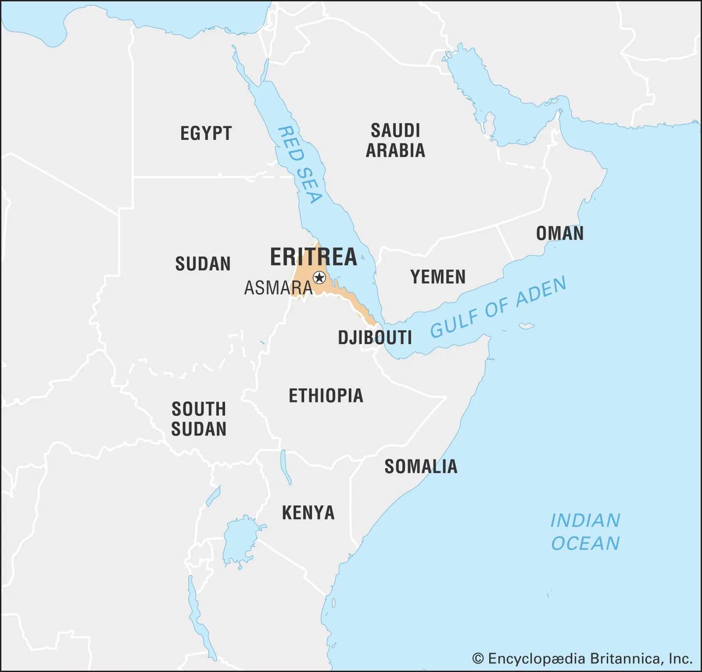

Biniam Girmay – Eritrea's Tour de France History-Maker
On July 1st Binian Girmay became the first black African to win a Tour de France stage as the Intermarché-Wanty sprinter beat the likes of Fernando Gaviria, Mads Pedersen and Fabio Jakobsen by a bicycle length after the 230km étape from Plaisance to Turin. A huge moment in the sport's – and Eritrea's – history.
But how much do you actually know about Eritrea? Could you even point to it on a map?
Eritrea and its population of ~3.6 million occupy a corridor along the Red Sea coastline in the Horn of Africa, bordered by Sudan, Ethiopia and Djibouti, whilst Yemen sits across the water 24 miles away – roughly the same distance as Dover to Calais.
Eritrea has been the subject of both British and Italian colonial occupation before being annexed by the Ethiopian empire in the mid 20th Century.
Eritrea fought for its independence over a period of 30 years between 1961 and 1991 in the post-colonial era. Founded in 1961, the ELF (Eritrean Liberation Front) began a Guerrilla war of independence against the Ethiopian Monarchy before it and its offshooting faction the EPLF (Eritrean People's Liberation Front) combatted the Ethiopian government from the 1970s after the fall of the Ethiopian empire. Two further decades of bloody warfare ensued as the Ethiopia government – then backed by the USSR – continued to resist Eritrean independence. Between 1961 and 1991 approximately 170,000 soldiers and 150,000-280,000 civilians were killed, and around half a million people were displaced. Following the collapse of the Ethiopian government in 1991, a referendum (whose integrity was ensured by the UN) was held in Eritrea in which 99.8% of the population voted in favour of independence. On 28 May 1993, Eritrea became the 182nd member of the United Nations. Unfortunately tens of thousands of victims of its war never lived long enough to see it.
The story doesn’t end there I'm afraid. Eritrea, like so many other African countries – particularly those in the Horn – have been plagued by instability and violence. President Isaias Afwerki has been in control since 1993 and his party, the People's Front for Democracy, is the only legal one in the country to date. Eritrea fought another war with Ethiopia between 1998-2000 over a border dispute with an estimated death toll of 98,000. There have been several border skirmishes since and the Eritrean military was most recently involved in the Tigray War (2020-2022) between the Ethiopian government and Tigrayan separatists, in which, according to the United States, Eritrean forces committed "widespread and serious human rights abuses." The US also considers Eritrea "one of Africa's most repressive and impoverished dictatorships," and the UN Human Rights Council investigated the nation for both rights abuses and crimes against humanity in the 2000s-2010s.
The strategic importance of Eritrea is immediately inferable as it sits at the exit of the Red Sea to the Gulf of Aden – at the northern end of the Red Sea lies the entrance to the Suez Canal, through which roughly 25,000 ships travel each year. The importance of this trade route has meant a military-base arms race in the region with US, Japanese, Italian, French, Chinese and Saudi Arabian bases built in neighbouring Djibouti, whilst Russia is currently surveying the Eritrea territories of Massawa, Assab and the Dahlak Archipelago to build its own naval base just up the road from Eritrea's Israeli and Iranian bases. The Red Sea is one of the most important global trade routes, one of the easier routes for Iran to deliver weapons to Hamas, Hezbollah and other allies, whilst Eritrea itself denies Ethiopia a significant stretch of coastline. All that before we even begin to mention the human- and drug-trafficking trade routes in the same waterways or the abundance of natural resources in the region including oil reserves and rare earth materials or indeed the ongoing Yemeni War just over the Gulf.
Compare then the troubled nation of Eritrea to its internationally-militarised neighbour Djibouti, then Eritrea could make an interesting theatre for the global powers to clash in the region once again as they aim to increase their grip over this area of strategic importance. And it seems that China has taken the lead as it integrates Eritrea into its Belt and Road Initiative, including breaking ground on a copper and zinc mine as well as constructing a 500km road between the aforementioned Massawa and Assab ports in recent times. The country's dictatorship currently leans eastwards to its Russian and Chinese benefactors, but that could all change as this unstable region continues to develop. It will be interesting to see where Eritrea goes next in this geopolitical context, but it certainly won't be idle…
This is the first article on Geoliepolitics and if you found it interesting then great! I apologies for the shall we say rustic look of the website but I'm learning to code it myself so it might stay like this for a while. See you next time!
